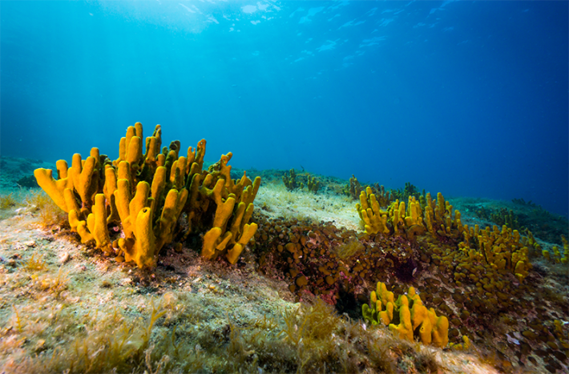
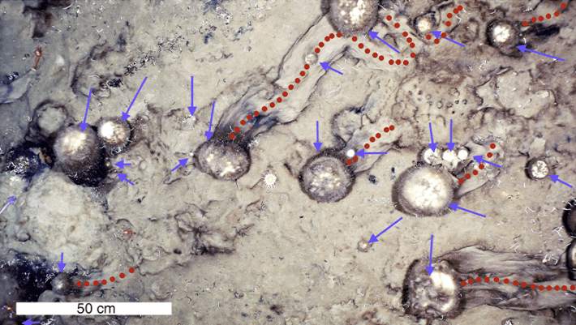

On a frigid August day, 2,000 feet beneath the frozen surface of the North Atlantic, a remotely operated camera captured a faint pale smudge snaking across the seafloor. The footage seemed unremarkable to the untrained eye—mostly brown and gray seafloor, dark but for the illumination from the camera. But the biologists aboard the Polarstern—a research icebreaker above—were shocked: The smear in the upper left of the screen was the trace of a sea sponge on the move.1
Sea sponges are not supposed to move. At least scientists didn’t think they were. But there, off the coast of Greenland, along the seamounts of Langseth Ridge, they were very much moving—slowly.
Why, you might wonder, would anyone care about a bevy of brainless organisms crawling along the dark ocean bottom at the unremarkable pace of a few millimeters a year? For those who aren’t spongiologists—scientists who study sponges—the topic might seem distinctly esoteric. But sea sponges are in fact central engineers of ocean ecosystems; for over 600 million years they’ve been shaping the very nature of Earth’s seafloors. And the discovery of their unexpected mobility redefined these “sessile” animals as movers and shakers of the deep.
Crawling at a fraction of a snail’s pace, sponges alter the seafloor in their wake.
For centuries, scientists puzzled over a fundamental aspect of sponge biology: plant or animal? It’s easy to understand the confusion. Sponges vary widely in form—from cone-shaped to blob-like, branching to round—and many of them bear a striking resemblance to seaweed. More than 8,500 species make up the phylum Porifera—or pore-bearer. Despite their plant-like appearance, sponges are one of our oldest-living ancestors and among the simplest multicellular animals on the planet, lacking organs, tissues, or even a fixed body plan. This arrangement is so basic, in fact, that if broken down into its cellular components, a sponge can reassemble itself. Place a sea sponge in a blender and agitate it gently (or pass it through a sieve) to break apart its structure, and its cells will rejoin to create a “new,” fully functional sponge.2
Before synthetic sponges became widely available in the 1940s, these nondescript animals augmented humans’ lives, serving as everything from body and kitchen cleaners to surgical dressings to (woefully ineffective) contraceptive devices. Sea sponges are perhaps best known in the Mediterranean, where their cultural influences trace back nearly 5,000 years.3 In Egyptian and Phoenician cultures, sponges appeared as decoration in the homes of royalty; in ancient Greece, where the term spongos originated, a lineage of tanned musclemen dove dozens of meters beneath the ocean surface to harvest them.
In the wild, these unassuming animals have inserted themselves into just about every reach of the world’s seas and oceans.4 They’re found in habitats ranging from intertidal to abyssal, tropical to polar, blazing hot to icy cold. Many live in colonies while others are solitary. They attach themselves to a range of different substrates, from rock to sand to mud and even, occasionally, floating debris.
Their life histories are nearly as varied as their habitats. Many sponges live just a few years, while some of their deep-sea counterparts rank among the oldest living things on Earth, with lifespans exceeding 10,000 years. They range in size from barely a centimeter to several meters across—from the size of a pencil eraser to that of a minivan. And through hundreds of millions of years of evolution, sponges have developed a simple form that functions remarkably well. Their porous skeletons, made up mostly of silica and calcium carbonate, are strong and light, lending to applications as diverse as improvised nose-guards for foraging dolphins and architectural inspiration for one of the most iconic buildings in London.

SPONGE WORTHY: Mediterranean sea sponges, like these, have been utilized in human culture for at nearly 5,000 years. Photo by Adam Ke / Shutterstock.
As ecosystem engineers, sponges are among the best in their field. After they die, the remains of sponges’ skeletal parts help stabilize the seafloor and act as a welcome mat for colonizing benthic organisms. For instance, after the massive Ordovician extinction, which wiped out much of life on Earth 445 million years ago, sponges laid a foundation that helped marine ecosystems recover by leaving a textured substrate on which corals and other benthic animals could take hold.5 This, in turn, helped support reefs, kelp beds, and other key building blocks for ocean food webs. And before they die, live sponge beds, or aggregations, as they are often called, also provide habitat for fishes and other marine life by creating physical structures in which these animals can forage and hide.
As filter feeders, sponges process enormous volumes of seawater—a single 2-pound sponge can churn through more than 5,000 gallons of water each day—in turn affecting ocean chemistry and creating nutrient-rich hotspots of biodiversity. In some coral reefs, sponges excrete a form of “sponge poop” that contains a biologically available form of carbon that other animals can use for growth. By taking up nitrogen, phosphorus, and carbon from the water, sponges also help to protect ecosystems from severe fluctuations in ocean chemistry. This capacity for extreme filtration also makes them bioremediators of our ever-more polluted waters: In the process of exchanging water, sponges hold onto the bad stuff, such as harmful bacteria and petroleum products, and leave the ocean cleaner. In ways we are only just beginning to appreciate, these creatures play a key role in shaping our watery blue planet.
Sponges’ ability to move may make them even more broadly crucial across a range of marine ecosystems. Crawling—or perhaps more aptly, oozing—at a fraction of a snail’s pace, sponges alter the seafloor in their wake. As the sponges move, tiny skeletal extensions called spicules break off, leaving clear evidence of their passage; this was the smear that the Polarstern’s camera captured nearly 10 years ago.
Our fate, one could argue, is closely linked to that of the lowly sponges.
Previous laboratory experiments had indicated the potential for sponges to locomote via sequential remodeling of their entire bodies. By spreading onto a surface and repeatedly reassembling themselves in an end-over-end process, they could, in theory, propel themselves along the seafloor. However, evidence for such behavior had never been observed in situ or at such a large scale; in fact, this was the first time that sea sponges in the wild were confirmed to be on the move. In the Mediterranean, sponge marks resembling those found on the Langseth Ridge were thought to have resulted from sponges being tumbled along by undersea currents, not from their own directed locomotion.
But something different seemed to be happening in the Arctic. Once the biologists on the Polarstern knew what to look for, they saw sponges on the move en masse. In fact, 69 percent of the sponge beds the team surveyed had “movement trails,” distinguishable from marks left by current-tumbled sponges because of the spicules they’d left behind. And when they reexamined 30-year-old records from the Canadian Arctic, the scientists noted similar signs, including evidence of directional change and uphill movement, suggesting that sponges have been crawling around on the Arctic seafloor for quite some time. Whether such behavior is widespread across sponges’ global range—and exactly how long they’ve been on the move—are among the spongiological mysteries yet to be solved.
The why of locomotion is relatively easy to explain, at least in theory: Sponges likely move, as other animals do, in search of food or more-favorable environmental conditions or to escape overcrowding. In low-productivity environments such as the Arctic deeps, there’s not much food on offer and, according to some hypotheses that scientists put forth, moving may be one way to ensure tomorrow’s meal. But this movement could also reflect a unique reproductive strategy at work. Sponge trails like the ones the biologists aboard the Polarstern observed are thought to contain both asexual sponge buds (aka baby sponges) and the material these young animals need to grow. By leaving parts of themselves behind as they inch across the seabed, sponges could be laying the groundwork for the next generation.
The philosopher-biologist-artist Ernst Haeckel wrote a treatise on sponges 150 years ago, arguing that humans and sponges share the same natural and material origins.6 By his definition, we are essentially no more and no less than sponges. Long before, many of Aristotle’s contemplations of the natural world were centered on his own careful observations of sponges, which he recognized as animals that possessed “a sort of sensation.” Today, if not recorded as poetically, the inferences are no less profound: Our fate, one could argue, is closely linked to that of the lowly sponges.
Scientists are continuing to learn about the ways in which sponges help support both healthy oceans and healthy humans. Sponges are now used widely in biomedical applications, from experimental tissue regeneration to biomimetic models for artificial bone scaffolding. They also possess potent antibacterial and antiviral properties, with sponge-derived chemicals already hard at work in some cancer-fighting drugs.

HAPPY (SPONGE) TRAILS: Sponge trails observed by Polarsternresearchers in an area of seafloor wholly covered by spicule mat. Purple arrows indicate individual sponges, with red dotted lines indicating the midpoints of sponge trails. Image from Morganti, T.M., et al. Current Biology.
Looking forward, sponges provide important insights into the future of our oceans, and how marine organisms might be able to respond to rapidly changing marine conditions—or not.7 Sponges’ relationship to climate change—and their roles in it—may be nearly as varied as the creatures themselves.8 Shallow water sponges have been identified as possible “climate winners” because of their relatively high temperature tolerance.9 In the deeps of the North Atlantic, some of the same patterns of resilience appear to hold true, making sponges unusual among northern animals; warming waters are not necessarily less hospitable. In certain instances, sponges’ ranges may actually expand under projected climate conditions.
And many questions remain. Sponges collected from the Caribbean Sea are currently at the center of a heated scientific debate about how much the planet has already warmed, and whether we’ve passed a critical tipping point.10 Laboratory experiments show mixed results for sponges when simulating future conditions, with outcomes varying by species and climate model selected; unsurprisingly, not much survives under the “worst case” warming scenario. Besides temperature, sponges can be sensitive to shifts in oxygen and pH levels, as well as more-abrupt changes in ocean environments. Such changes—many of which reflect a combination of human-driven and natural processes—can both help and hurt sponges. For instance, tidal waves and other large-impact waves help facilitate sponge dispersal but can also be deadly to the individual animals. And the fate of sponges mirrors that of the multitude of species that depend on them.
Climate change isn’t the only pressure these slow-growing animals face: They’re also vulnerable to disturbance from trawling and other human seafloor activities, such as mining. And as researchers learn more about sponges’ contemporary utility, including in biomedical applications, there’s potential for direct exploitation, this time by means more sophisticated than a diving suit and a strong set of lungs. In fact, part of the mission of the research project that included the Polarstern team was to help support the sustainable harvest of deep-sea sponges given continued commercial interest in them.
There, in the murky depths of the Langseth Ridge, another Porifera superpower had been revealed—these purportedly-sessile creatures were on the run, changing the seafloor and whole ecosystems in their wake. As sponges’ secrets continue to unfold, we’re reminded to observe not only the big things, but the small; interrogate not only the clever but the brainless; follow not only the swift-winged and fleet-footed but also the seemingly stationary. The lowly sea sponge is going places, that much is clear. 
Lead image: Citron / Wikimedia commons
References
-
Morganti, T.M., Purser, A., & Rapp, H.T. In situ observation of sponge trails suggest common sponge locomotion in the deep central Arctic. Current Biology 31, R359-R373 (2021).
-
Wilson, H.V. On some phenomena of coalescence and regenerations in sponges. Journal of the Elisha Mitchell Scientific Society 23, 161-174 (1907).
-
Pronzato, R. & Manconi, R. Mediterranean commercial sponges: Over 5,000 years of natural history and cultural history. Marine Ecology 29, 146-166 (2008).
-
Bell, J.J. 2008. The functional roles of marine sponges. Estuarine, Coastal and Shelf Science 79, 341-353 (2008).
-
Botting, J.P., et al. Flourishing sponge-based ecosystems after the end-Ordovician mass extinction. Current Biology 27, 556-562 (2017).
-
Reynolds, A.S. Ernst Haeckel and the philosophy of sponges. Theory in Biosciences 138, 133-146 (2019).
-
Muir, L., Botting, J., & Beresi, M.S. Lessons from the past: Sponges and the geologic record. In Carballo, J.L. & Bell, J. (Eds) Climate Change, Ocean Acidification, and Sponges. Springer, Cambridge, United Kingdom (2017).
-
Samuelson, A., Schrum, C., Yumruktepe, V.C., & Daewel, U. Environmental change at deep-sea sponge habitats over the last half century: A model hindcast study for the age of anthropogenic climate change. Frontiers in Marine Science 9, 737164 (2022).
-
Beazley, L.I., Kenchington, E.L., & Murillo, F.J. Climate change winners in the deep sea? Predicting the impacts of climate change on the distribution of the glass sponge Vazella pourtalesii. Marine Ecology Progress Series 657, 1-23 (2023).
-
McCulloch, M.T., Winter, A., Sherman, C.E., & Trotter, J.A. 300 years of sclerosponge thermometry shows global warming has exceeded 1.5 °C. Nature Climate Change 14, 171-177 (2024).
Källförteckning
- Originalartikel: https://nautil.us/sea-sponges-on-the-move-1209877/